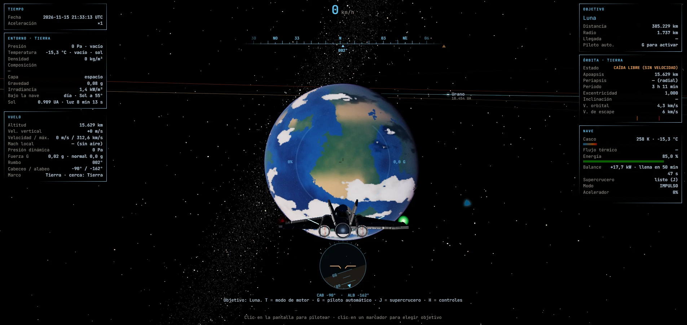
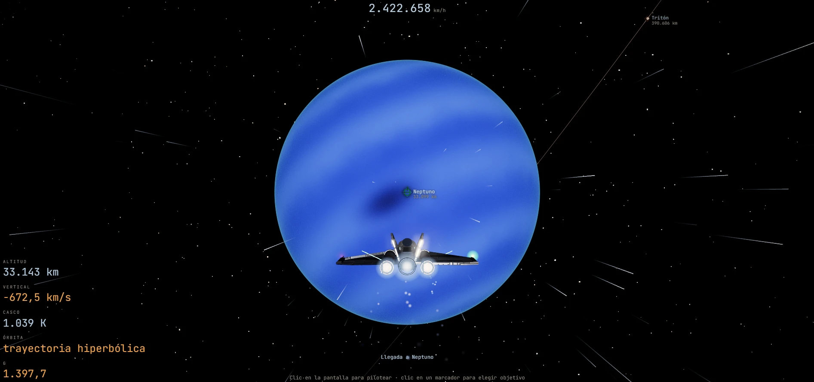
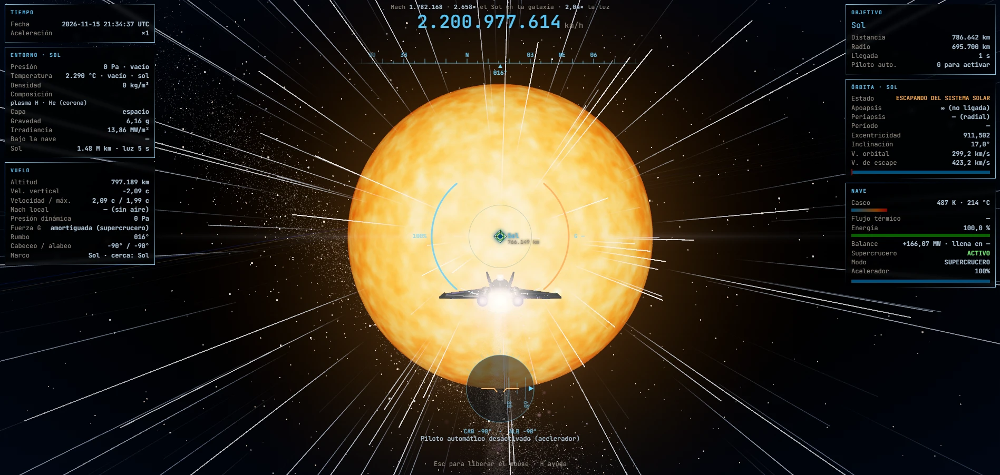
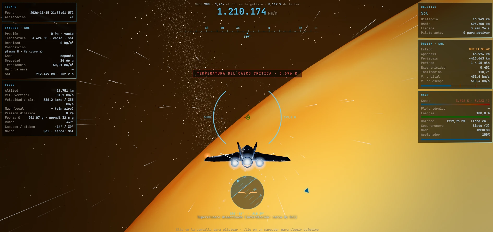
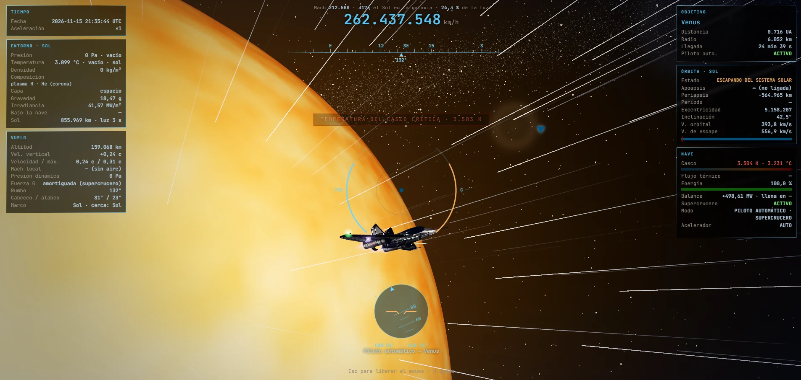
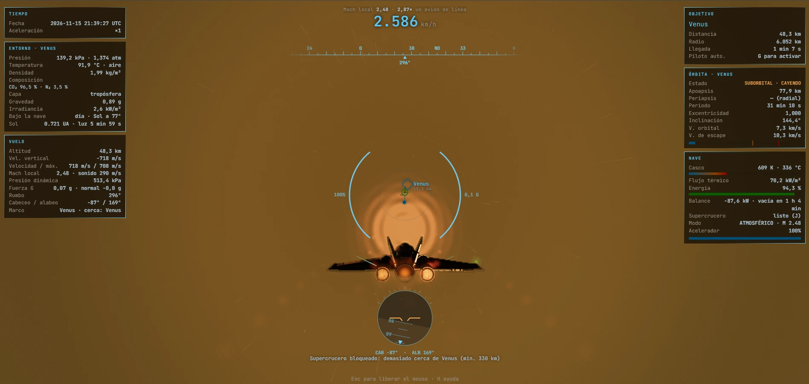
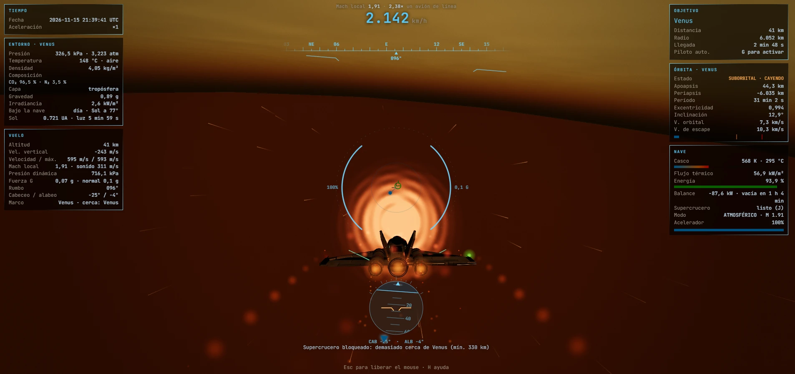
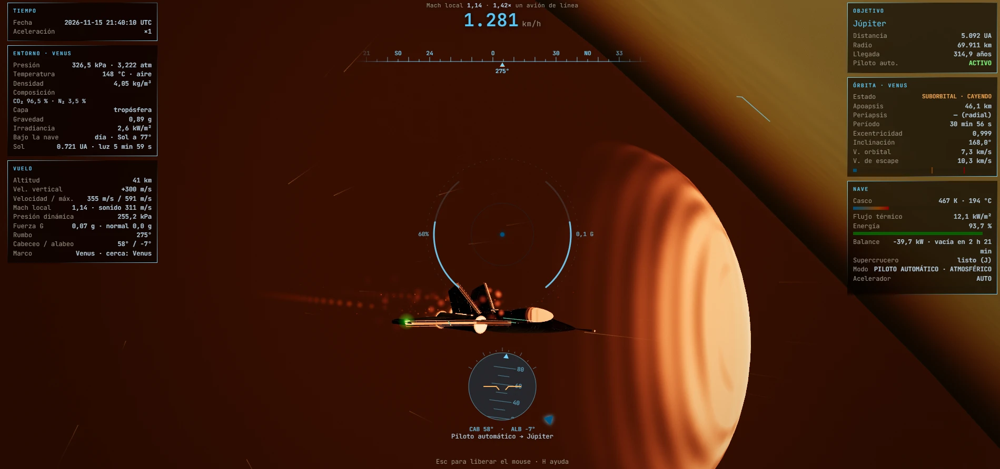
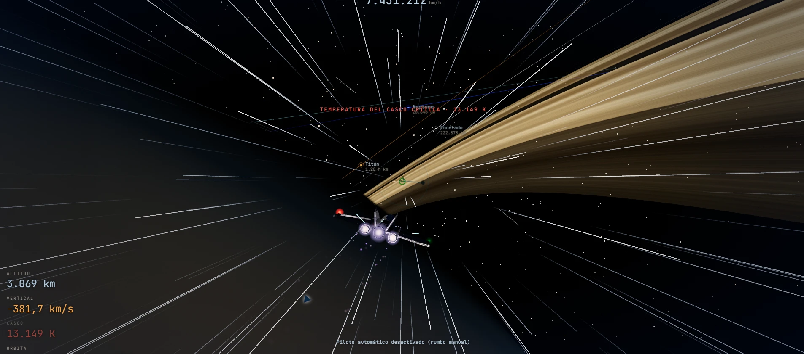

Escala real 1:1
Distancias, tamaños y velocidades reales. De la Luna a Neptuno sin atajos de escala.


Recorré el sistema solar completo con una nave, a escala 1:1, con planetas procedurales, terreno real, atmósferas con scattering físico y tres modos de motor. Todo en el navegador.
Distancias, tamaños y velocidades reales. De la Luna a Neptuno sin atajos de escala.


Luna, Tierra, Marte, Mercurio y lunas con LOD por quadtree generado en Web Workers; volás a pocos metros del suelo y la nave choca con el relieve.

Scattering físico, Sol con limb darkening, nubes volumétricas y reentrada con plasma.

Atmosférico (jet/VTOL), impulso y supercrucero para viajes interplanetarios, con piloto automático.

Elementos keplerianos de JPL para los planetas; ejes de rotación según polos IAU.

De tiempo real hasta ×1.000.000, con vuelta a la fecha actual.

Tres estilos (sci-fi, aviónica, minimalista) con datos físicos reales: velocidad respecto del aire, G, densidad.

Cada modo de motor suena distinto; compatible con control.

| Precisión float32 | La simulación usa double de JS (metros) y la cámara está siempre en el origen: todo se dibuja relativo a ella. |
|---|---|
| Z-fighting | Buffer de profundidad logarítmico para convivir entre 0,5 m y 10¹⁵ m. |
| Cuerpos en movimiento | La nave guarda su posición relativa al cuerpo dominante (esfera de influencia) y cambia de marco al cruzar. |
| Distancias enormes | Supercrucero con velocidad proporcional a la altitud e interdicción automática al acercarse. |
| Cuerpos sub-píxel | Puntos de tamaño fijo y marcadores en el HUD. |
| Atmosférico | Hasta ~950 m/s (Mach 2,5–3), para volar bajo sobre el terreno. |
|---|---|
| Impulso | 500 m/s a 3.000 km/s, con inercia y RCS. |
| Supercrucero | 0,75 × la altitud, con carga de 1,5 s. |
2.200.977.614 km/h · escapando del sistema solar